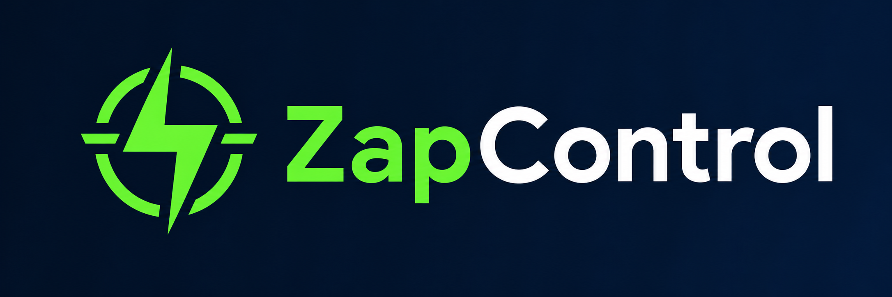

Automatize seu WhatsApp e transforme cada conversa em uma oportunidade de venda
Centralize seus atendimentos, organize sua equipe, automatize respostas e acompanhe seus clientes em uma única plataforma.
Atendimento organizado, implantação simplificada e suporte especializado.
Uma plataforma completa para empresas que desejam atender com mais rapidez, controle e eficiência.
Feito para empresas que querem atender melhor
O Zap Control se adapta a diferentes segmentos e ajuda sua empresa a organizar o atendimento, acompanhar clientes e gerar novas oportunidades.
Lojas e comércios
Organize pedidos, dúvidas, orçamentos e pós-venda em um só painel.
Clínicas e consultórios
Direcione pacientes, confirme horários e mantenha históricos acessíveis.
Prestadores de serviços
Controle solicitações, retornos e atendimentos recorrentes sem perder contexto.
Imobiliárias
Acompanhe leads, visitas, negociações e documentação em etapas claras.
Escolas e cursos
Centralize matrículas, suporte aos alunos e campanhas de relacionamento.
Equipes de vendas
Transforme conversas em oportunidades com funil e acompanhamento.
Suporte técnico
Separe filas, tickets e responsáveis para resolver solicitações com agilidade.
Empresas de cobrança
Automatize lembretes, negociações e acompanhamentos com mais controle.
Tudo o que sua empresa precisa para gerenciar o WhatsApp
Centralize conversas, automatize tarefas e acompanhe todo o relacionamento com seus clientes em uma única plataforma.
Atendimento com vários usuários
Permita que vários atendentes utilizem o mesmo número de WhatsApp, com organização por setores, filas e responsáveis.
Chatbot automatizado
Crie menus automáticos para direcionar clientes aos setores de vendas, suporte, financeiro ou recepção.
Funil de vendas
Organize oportunidades em etapas e acompanhe cada cliente desde o primeiro contato até a conclusão da venda.
Respostas rápidas
Cadastre mensagens prontas para agilizar o atendimento e manter um padrão de comunicação em toda a equipe.
Agendamentos
Programe mensagens, campanhas, lembretes, cobranças e retornos automáticos.
Gestão de contatos
Centralize dados, históricos, etiquetas, observações e informações importantes dos clientes.
Relatórios e resultados
Acompanhe tempo de atendimento, quantidade de conversas, desempenho da equipe e satisfação dos clientes.
Integrações
Conecte o Zap Control com sistemas, ferramentas e plataformas utilizadas pela sua empresa.
Veja o Zap Control em ação, como uma apresentação de produto
Use o play para passar pelas principais telas e mostrar atendimento, relatórios, conexões e filas em uma sequência profissional.


Comece a organizar seu atendimento em poucos passos
Configure sua operação de maneira simples e concentre todas as conversas em um único ambiente.
Conecte seu WhatsApp
Faça a conexão do número utilizado pela empresa e centralize as conversas na plataforma.
Configure sua equipe
Cadastre atendentes, setores, filas, permissões, horários e mensagens automáticas.
Comece a atender
Receba, distribua e organize todas as conversas em um único painel de atendimento.
Há 5 anos transformando a comunicação entre empresas e clientes
A Zap Control é uma empresa especializada em soluções de CRM e automação para WhatsApp. Nossa missão é ajudar empresas a centralizar atendimentos, organizar equipes, automatizar processos e transformar cada conversa em uma oportunidade de venda.
Ao longo de cinco anos de experiência, desenvolvemos uma plataforma completa, prática e segura, com recursos para atendimento por múltiplos usuários, chatbot, funil de vendas, campanhas, gestão de contatos e acompanhamento de resultados.
Mais do que oferecer tecnologia, buscamos simplificar a rotina das empresas, aumentar a produtividade das equipes e proporcionar um atendimento mais rápido, organizado e eficiente aos clientes.
Conheça nossas soluções
- 5 anos de experiência
- Plataforma completa
- Atendimento especializado
- Foco em produtividade
- Tecnologia e segurança
- Evolução constante
Mais organização para sua equipe. Mais agilidade para seus clientes.
Transforme processos manuais em uma operação organizada, automatizada e preparada para atender mais clientes.
Integre o Zap Control ao seu negócio
Utilize nossa API e nossos webhooks para conectar o Zap Control aos sistemas que sua empresa já utiliza.
Conhecer integraçõesEscolha o plano ideal para sua empresa
Encontre os recursos ideais para organizar sua operação e evolua de plano conforme sua equipe crescer.
Plano Start
Indicado para pequenas empresas que estão começando a organizar o atendimento.
Consulte condições- Atendimento pelo WhatsApp
- Cadastro de usuários
- Respostas rápidas
- Gestão de contatos
- Suporte
Plano Pro
Indicado para empresas que possuem equipes de atendimento e vendas.
Consulte condições- Todos os recursos do Start
- Chatbot
- Filas e setores
- Funil de vendas
- Agendamentos
- Relatórios
- Campanhas
Plano Master
Indicado para empresas que precisam de mais desempenho, integrações e personalização.
Consulte condições- Todos os recursos do Pro
- API
- Webhooks
- Integrações personalizadas
- Maior número de usuários
- Suporte prioritário
- Personalização da plataforma
Empresas que melhoraram seus atendimentos com o Zap Control
“Depois que organizamos os atendimentos no Zap Control, nossa equipe passou a responder com mais rapidez e nenhum cliente ficou perdido entre os setores.”
Mariana LopesGerente Comercial“O funil de vendas e o histórico das conversas facilitaram muito o acompanhamento dos clientes. Hoje temos mais controle sobre cada oportunidade.”
Ricardo MartinsDiretor de Operações“O chatbot reduziu as tarefas repetitivas e ajudou a direcionar cada cliente para o setor correto. Nossa operação ficou muito mais organizada.”
Camila SouzaSupervisora de AtendimentoDepoimentos demonstrativos. Substitua por avaliações reais dos clientes antes da publicação definitiva.
Perguntas frequentes
Encontre respostas para as principais dúvidas sobre o Zap Control.
O que é o Zap Control?
O Zap Control é uma plataforma de CRM e automação para WhatsApp que centraliza atendimentos, organiza equipes, automatiza respostas e ajuda a acompanhar clientes e oportunidades de vendas.
Preciso trocar meu número de WhatsApp?
Em muitos casos, é possível utilizar o número de atendimento da própria empresa. A equipe do Zap Control poderá orientar sobre a melhor forma de conexão e configuração.
Posso cadastrar vários atendentes?
Sim. É possível cadastrar vários usuários e organizar o atendimento por setores, filas, equipes e permissões.
O sistema possui chatbot?
Sim. O Zap Control permite criar fluxos e menus automáticos para direcionar os clientes aos setores corretos.
Posso organizar os clientes por setores?
Sim. As conversas podem ser organizadas por departamentos, filas, responsáveis, etiquetas e outras classificações.
O Zap Control possui API?
Sim. Os planos compatíveis podem utilizar API e webhooks para integração com sistemas externos.
É possível realizar campanhas?
Sim. A plataforma possui recursos para organizar campanhas e comunicações, respeitando as regras, permissões e políticas aplicáveis ao WhatsApp.
O sistema funciona no celular?
A plataforma possui layout responsivo e pode ser acessada em dispositivos compatíveis por meio do navegador.
Existe suporte para configuração?
Sim. Nossa equipe oferece suporte e orientação durante a configuração e utilização da plataforma, conforme as condições do plano contratado.
Posso testar antes de contratar?
Entre em contato com a equipe do Zap Control para consultar a disponibilidade e as condições do período de teste.
Pronto para transformar o atendimento da sua empresa?
Automatize processos, organize sua equipe e ofereça uma experiência melhor para seus clientes com o Zap Control.
Vamos melhorar o atendimento da sua empresa?
Fale com nossa equipe e descubra como o Zap Control pode ajudar sua empresa a atender com mais rapidez, organização e eficiência.